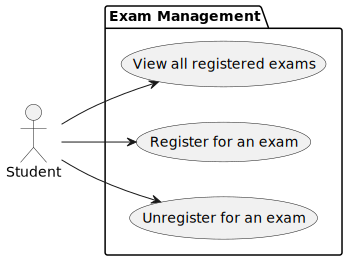
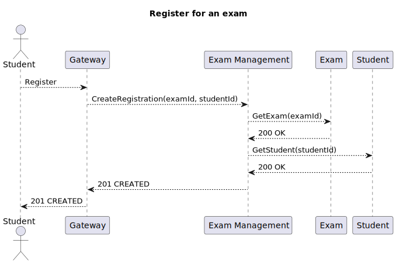
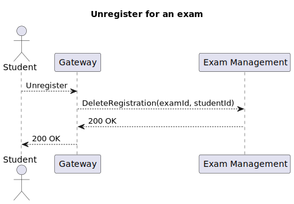
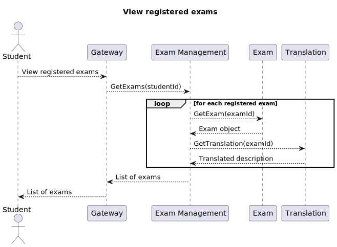
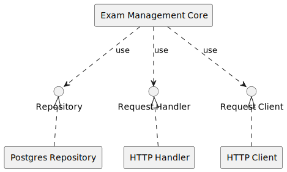
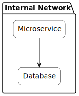
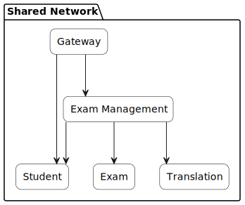
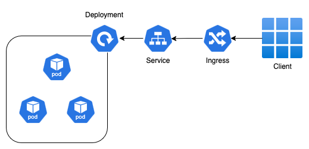

Microservices mit Google Go

Projekt auf Github
Motivation
- POS an der TH Mannheim
- Prüfungen lokal gespeichert, aber Übersetzung in Reutlingen
- Problem: Standortübergreifende Datenbank JOINs sind langsam
- Ansatz: Komposition und Aggregation auf Microservice Ebene
Systemüberblick

Use Cases

Prüfungsanmeldung

Prüfungsabmeldung

Angemeldete Prüfungen einsehen

Hexagonale Architektur

Golang
- Stark typisierte, kompilierte Sprache
- Fokus auf Einfachheit und Kompatibilität
- Garbage Collector
Errors as values
Goroutines
- Leichtgewichtige Objekte
- Go Runtime verteilt Goroutines auf Threads
- Kommunikation zwischen Goroutines mittels Channels
Docker Build (2-Stage)
- Stage 1: Build der Binary
- Stage 2: Ausführung im
scratch-Container
Docker Image Size
| Image Name | Image Size |
|---|---|
| Gateway | 8.82 MB |
| Student | 11.6 MB |
| Exam | 11.6 MB |
| Exam Management | 12.3 MB |
| Translation | 11.6 MB |
Docker Network

Docker Network

Kubernetes Deployment

Kubernetes Operator
- Übernimmt die Rolle eines Administrators
- Kennt alle domänenspezifische Abläufe
- Überwacht Custom Ressource Definitions (CRDs)
Der CloudNativePG Operator
- Automatisiert die Erstellung und Konfiguration eines Postgres Datenbank Clusters
- Backups, Updates, Metrics, RBAC, ...
Postgres Cluster Configuration
Schwächen des Systems
- Datenintegrität muss auf Microservice Ebene sichergestellt werden
- Dateninkonsistenz, falls Microservices ausfallen
- Lösung: Verteilte Transaktionen
- Fazit: Daten die zusammengehören, zusammen speichern!